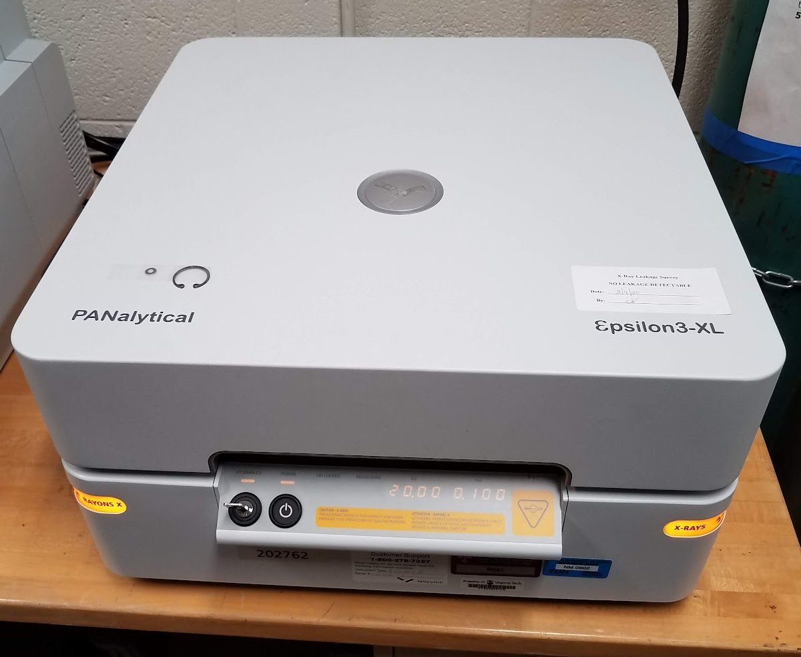

PanAlytical Epsilon3 Benchtop X-ray fluorescence spectrometer
The Epsilon 3 XL bench top x-ray fluorescence spectrometer performs quantitative bulk chemical analysis of rock powders, soils, fused glass beads, rock hand samples, and air filters. It is equipped with a 15 W (20 kV) Rhodium X-ray tube, a solid-state energy-dispersive spectrometer (EDS), a 10-position computer-controlled sample tray, rotating sample wells, and a high-resolution silicon drift detector (SDD). The system also includes a high-sensitivity beryllium window and a helium gas atmosphere for light element analysis.
X-ray fluorescence (XRF) spectroscopy is a method of determining the bulk chemical composition of an unknown material. When matter interacts with x-rays, it produces secondary x-ray fluorescence corresponding to the atomic composition of the sample. Because each chemical element produces a unique spectrum of secondary x-rays, the x-ray fluorescence spectrum of an unknown analyte can be used to determine its composition. An XRF spectrometer is a device which generates a monochromatic primary X-ray beam, directs this beam toward a target sample, and records the X-ray fluorescence spectrum produced during analysis.
Essentially any solid or liquid sample can be analyzed using the bench-top XRF spectrometer provided that the analyte fits either into one of the sample wells (3 cm diameter) or can be placed onto the sample platform, and that it is stable in air or a helium atmosphere.